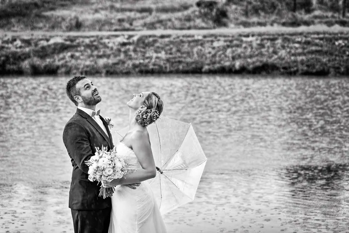
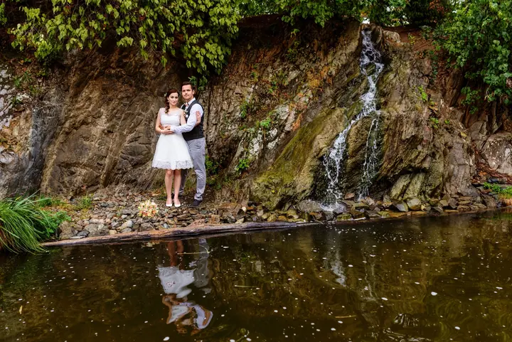

jedna
Svatby
Fotím celý příběh vašeho dne od ranních příprav přes obřad a portréty až po večerní taneční zábavu. Vybrat si můžete balíček na 6, 10 nebo 14 hodin focení.

Svatební a portrétní fotografka · Brno, jižní Morava, celá Česká republika

Jmenuji se Pavlína Wagnerová a fotím svatby v Brně, na jižní Moravě i jinde v Česku. Nejvíc mě baví přirozené chvíle a emoce mezi dvěma lidmi, ať je to ranní chystání, nebo západ slunce po obřadu.
Více o mně
Co fotím
jedna
Fotím celý příběh vašeho dne od ranních příprav přes obřad a portréty až po večerní taneční zábavu. Vybrat si můžete balíček na 6, 10 nebo 14 hodin focení.
dvě
Portrétní focení venku na místě, které si sami vyberete. Na přání vám zajistím zkušenou vizážistku nebo kadeřnici.
tři
Na rodinných fotkách často chybí ten, kdo fotí. Přizpůsobím se vašemu času a místo pro focení vybereme společně.
Klidné focení pro dva nebo pro budoucí rodiče, kde jde hlavně o přirozenost a emoce mezi vámi.
Každá svatba má svůj vlastní příběh


Za objektivem
Fotografování mě úplně pohltilo a stalo se každodenní součástí mého života. Věnuji se hlavně svatební a portrétní fotografii a svatby jsou dnes moje hlavní práce. Odfotila jsem jich už víc než 200. Fotím ale také těhotenské focení, portréty, rodiny a děti.
Pracuji hlavně v Brně a na jižní Moravě, ale ráda za vámi přijedu i do jiných částí republiky nebo do zahraničí, kde se domluvím anglicky. Fotím na dvě bezzrcadlovky Nikon Z6 II a světelné pevné objektivy Nikon, takže se na techniku můžu spolehnout i v náročných podmínkách.
Každou fotku upravuji individuálně v Adobe Lightroom a Photoshopu. Fotím do formátu RAW, který je potřeba dál zpracovat, a úpravy mi zaberou i několik dní. Od roku 2016 jsem členkou mezinárodní asociace svatebních fotografů Fearless Photographers.
Pavlína
Napište mi termín a místo vaší svatby. Pak se potkáme, poznáme se a probereme, jak si svůj den představujete.
Podle zvoleného balíčku jsem s vámi 6, 10 nebo 14 hodin. Fotím přípravy, obřad, skupinové fotky i portréty a u delších balíčků také tradice, první tanec a večerní veselí.
Fotky upravuji ručně jednu po druhé v Lightroomu a Photoshopu. Podle balíčku jim věnuji 20 až 40 hodin práce.
Hotové fotografie dostanete na USB flash disku v dřevěné krabičce spolu s tištěnými fotkami 13×18 cm.
Portfolio
Fotografie jsou ilustrační
Otázky
Balíček Mini na 6 hodin stojí 18 900 Kč, Standard na 10 hodin 21 900 Kč a Maxi na 14 hodin 26 900 Kč. V ceně jsou upravené fotky, tištěné fotografie a doprava podle balíčku.
Fotím do formátu RAW, což je jakýsi digitální negativ, který je potřeba dál zpracovat. Proto neupravené fotografie nepředávám, každou fotku dostanete pečlivě upravenou.
Ano. Kromě Brna a jižní Moravy fotím i v jiných částech České republiky a občas v zahraničí, kde se domluvím anglicky. U balíčku Maxi je doprava po celé ČR v ceně.
Lokalitu si vyberete sami, focení trvá podle balíčku 1,5 až 3 hodiny a stojí od 2 800 Kč. Na přání zajistím vizážistku nebo kadeřnici.
Napište pár vět o tom, co si představujete. · +420 605 934 797